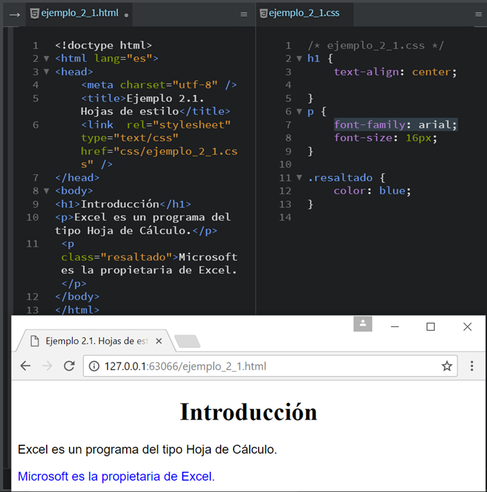

| ¿Qué son etiquetas |
| Códigos que puede leer una persona sin que sea necesario compilarlo primero. En otras palabras, el texto en una página web está «marcado» con estos códigos para dar instrucciones al navegador web sobre cómo mostrar el texto. Estas etiquetas de marcado son las propias etiquetas HTML. |
Etiquetas del cuerpo de HTML y CSS
📌 Body:
Delimita el cuerpo del documento
📌 Head:
Delimita el encabezado del documento.
📌 html:
Engloba todo el documento
📌 header:
Muestra el encabezado de la página
📌section:
delimita una sección en la página.
📌!DOCTYPE html:
Tipo de documento
📌 Title:
Título del documento (se muestra en la pestaña del navegador)
📌 link/rel/href
Enlace a otros archivos (hoja de estilo, etc.)
📌 Div:
Esta etiqueta permite agrupar varios elementos de bloque (párrafos, encabezados, listas, tablas, divisiones, etc).
📌 a:
hiperenlace
📌 padding:
Marca un marco en la pádina en ambos lados
📌 margin:
La propiedad margin es tan poderosa que permite establecer uno, dos, tres o los cuatro márgenes de forma simultánea.
Ejemplo de estructura con etiquetas de un cuerpo html y CSS
.png)
Etiquetas dirigidas al texto de HTML y CSS

📎h1-h6:
Tamaños de títulos
📎 table(tr/td):
Inserta una tabla, tr muestra las filas y td muestras las celdas.
📎 br:
muestra un salto de linea en los textos.
📎 font-size:
Brinda un tamaña determinado en porcentaje o pixeles.
📎 font-family:
Muestra la fuente del tipo de letra.
📎text-align:
Alinea los textos.
📎 background-color:
Atribuye un fondo a los textos.
📎 color:
Brinda un color a la letra.
Etiquetas dirigidas a imagenes u objetos
Ejemplo de código:
.png)
🎮img:
Agrega imagenes con su atributo "src".
🎮class:
Es un atributo para llamar a una etiqueta en css y asi poder anañir ediciones.
🎮wigth:
Brinda un ancho a los objetos.
🎮Height:
Brinda la altura de objetos.
🎮align:
Alinia imagenes serca de textos.
🎮border:
Coloca un borde en tablas o imagenes.
🎮border-radius:
Establece el redondeo de la esquina superior izquierda del elemento. El redondeo puede ser un círculo o una elipse, o si uno de los valores es 0, no se redondeará la esquina, dejándola cuadrada.